Культ кафе
Меню
Завтраки
*Завтраки работают весь день,да,да,весь!
Каши/Сырники/Яйца
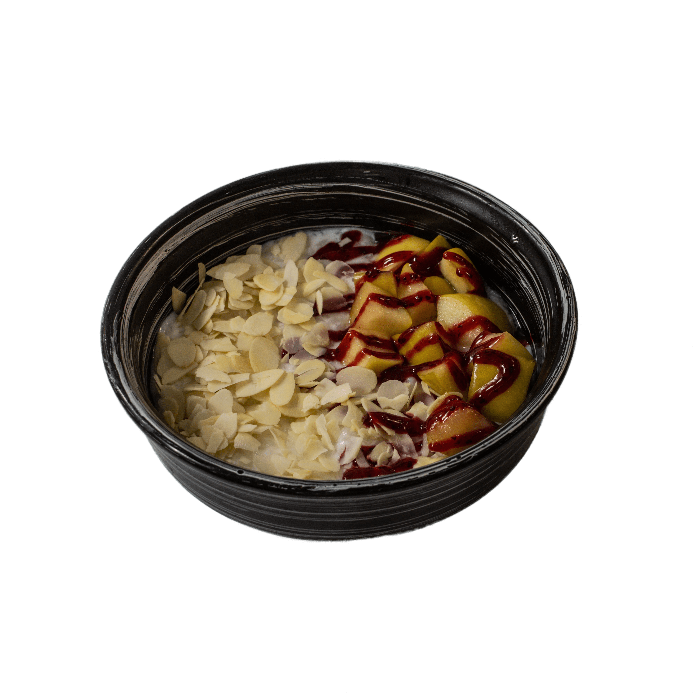
Каши - 100р
Каши - 100р
Пшенная/Овсянная/Рисовая
В кашу можно добавить:
-
яблочный чатни
с клюквенным конфи
(сахар, соль, яблоко, пряности,
клюква, миндальные лепестки) +60 руб. -
банан и вишневый дрессинг
(сахар, соль, банан, вишня,
миндальные лепестки) +70 руб. -
финики и арахисовая паста
(сахар, соль, финики, арахисовая паста,
миндальные лепестки) +80 руб.
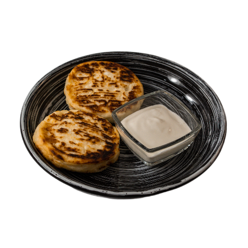
Сырники - 180р
-
Два нежных творожных сырника
подаются со сметаной, ягодным
соусом или соленой карамелью
, добавить сырник +70 руб
(Творог, сахар, манная крупа,
подсолнечное масло,
соус на выбор)
Яйца
-
Сливочный скрембл с беконом
и томатами черри
(3 яйца, сыр моцарелла, кранчи бекон,
томаты черри и микс салатов)- 260Р
-
Омлет с чеддерром и легким салатом
(3 яйца, сыр чеддер, микс салатов,
томаты черри, песто)- 220Р
-
Глазунья со слабосоленым лососем
и хрустящим тостом
(3 яйца, домашний лосось слабой соли,
тост, микс салатов, песто)- 290Р
Сэндвичи
*Могут быть на тосте/чиабатте/пите/булочке-панини
Мы пока сами не знаем=)
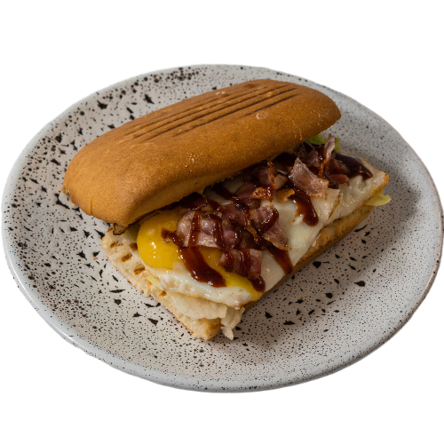
Сэндвич
Сэндвич
с беконом
в английском
стиле - 320Р
-
Хлеб, творожный сыр, арахисовая
паста, 2 яйца, бекон и соус BBQ
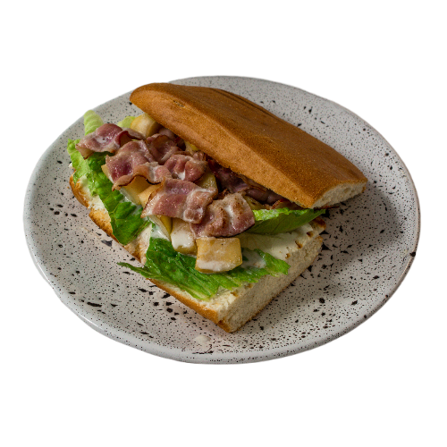
Сэндвич
Сэндвич
с карамелизированным
яблоком, беконом
и соусом блю чиз - 320Р
-
Хлеб, творожный сыр, яблоко, бекон,
дижонская горчица и соус блю чиз
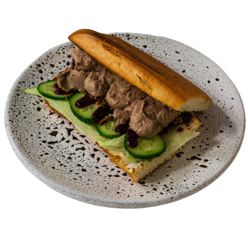
Сэндвич
Сэндвич
с домашним паштетом
и ягодным конфи - 310Р
-
Хлеб, творожный сыр, сливочный
паштет, огурец и ягодный соус
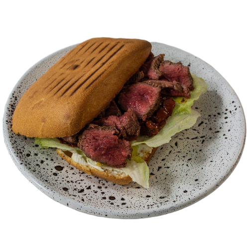
Сэндвич
Сэндвич
с мраморной говядиной
и вялеными томатами в
итальянском стиле - 350Р
-
Хлеб, творожный сыр, мраморная
говядина, вяленые томаты, оливковое
масло
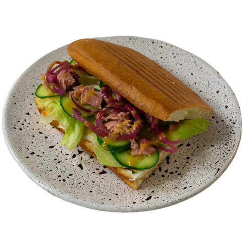
Сэндвич
Сэндвич
с консервированным
тунцом, маринованным луком
и свежим огурцом - 310Р
-
Хлеб, творожный сыр, красный
маринованный лук, консервированный тунец,
свежий огурец, медово-горчичный соус
Стейки и бургеры
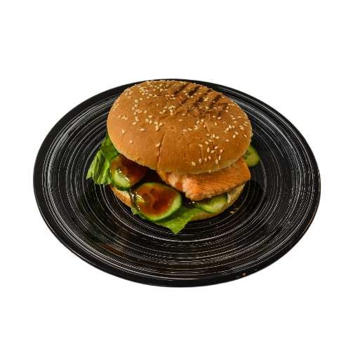
Салмон бургер
Салмон бургер
- 520Р
-
Булочка бриошь, стейк лосося,
творожный сыр, салат айсберг,
соус терияки
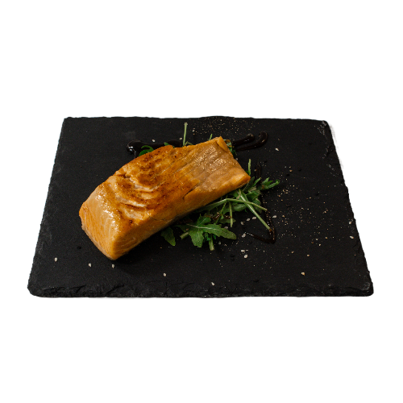
Стейк из филе Лосося
Стейк из филе Лосося
- 650Р
-
Филе чилийского лосося марки трим,
сливочное масло и специи
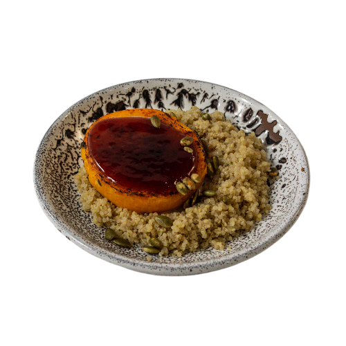
Стейк из тыквы с киноа
Стейк из тыквы с киноа
- 250Р
- Тыква, ореховая заправка, киноа
Закуски и Гарниры
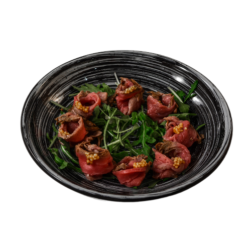
Ростбиф с зернистой
Ростбиф с зернистой
горчицей - 390Р
- Говяжья вырезка, зернистая горчица
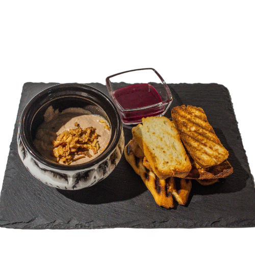
Домашний паштет
Домашний паштет
с ягодным соусом
и крутонами - 290Р
-
Горшочек со сливочным паштетом,
ягодный соус, хрустящие крутоны
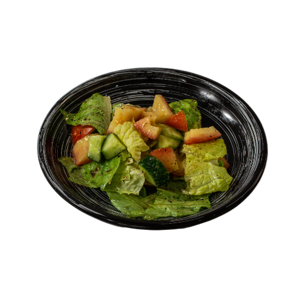
Салат из свежих
Салат из свежих
овощей - 130Р
-
Огурец, томаты, айсберг,
медовый соус
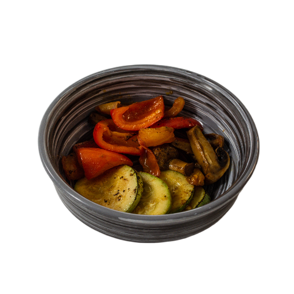
Овощи гриль - 150Р
- Цукини,грибы,томаты,болгарский перец
Салаты
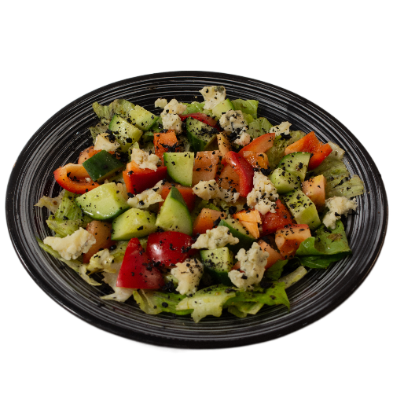
Греческий салат
Греческий салат
с голубым сыром - 290Р
-
Огурец, помидор, салат романо, перец,
маслины, голубой сыр, оливковое
масло и песто
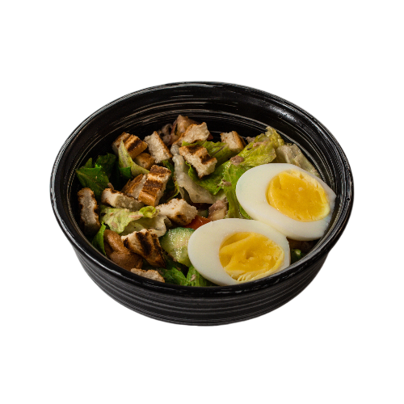
Салат
Салат
с консервированным
тунцом - 320Р
-
Консервированный тунец, огурец,
томат, салат романо,
медово-горчичный
дрессинг, яйцо и хрустящие
сухарики
.png)
Теплый салат
с ростбифом - 340Р
-
Микс салатов, беби-картофель,
ростбиф, маринованный лук,
горчичная заправка
.png)
Салат цезарь
со слабосоленым
лососем - 390Р
-
Авторский соус цезарь на
основе тунца, дижонсокой
горчицы и каперсов, салат
айсберг, салат романо, домашний
слабосоленый лосось, томаты черри,
хрустящие сухари, сыр пармезан
и песто
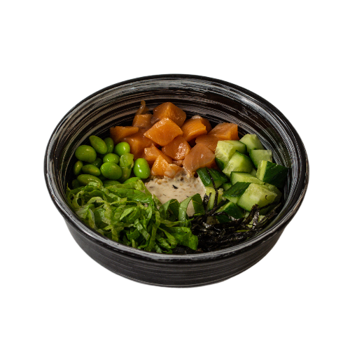
Боул с лососем - 410Р
-
Киноа, домашний лосось слабой соли,
огурец, салат романо, бобы эдамаме,
ореховая заправка
Пасты
.png)
Паста с белыми
грибами
- 320Р
-
Паста,сливочная основа,белые
грибы, пармезан